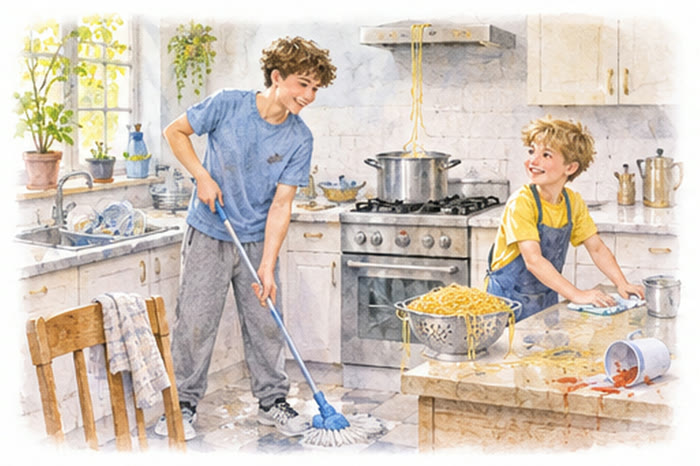

Listen to the text
Speed:

Last Sunday my parents went to visit my aunt and left my brother Matvii and me at home alone for the whole day. "You are big now," said Mum. "You can look after yourselves." It was a brave decision. At ten o'clock Matvii, who is nine, announced, "I will make breakfast myself." He made himself a sandwich with jam, cheese and ketchup. He ate it himself too. I didn't want to try. I decided to cook a real lunch by myself: spaghetti. I had watched a video. How difficult can it be? I burned myself on the pot, and the spaghetti became one big ball. We told ourselves that it was a new Italian dish. In the afternoon the tap in the bathroom started dripping. "I will fix it myself," I said. I turned something, and the water went everywhere. Matvii laughed so much that he hurt himself on the door. In the end the tap fixed itself. I still don't know how. Then we looked at ourselves in the mirror. We were wet, and there was tomato sauce on my T-shirt and jam in Matvii's hair. The kitchen looked like a battlefield. "They will be home at seven," I said. "Let's save ourselves." We washed the floor. We cleaned the kitchen. Matvii even washed himself without being told, which was a historic moment. At seven our parents came in. The flat was shining. "Did you do all this yourselves?" asked Mum. "Yes," we said proudly. She looked at the ceiling above the cooker. There was one piece of spaghetti. It is still there.
Tap any sentence to hear it again.
Сподобалось? На сайті ще більше матеріалів для вчителів!
Reader, презентації, ігри, діагностичні та контрольні роботи до підручників 1-11 класів.
Перейти на сайт materials.allaenglish.com